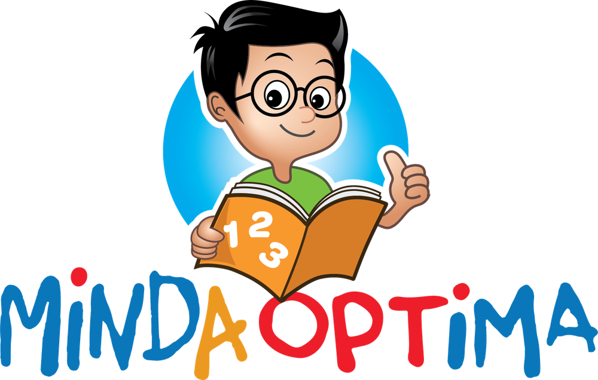

A
b
d
?
K
ANAK
DAH
BESAR...
?
TAPI
MASIH
SUSAH
NAK
MEMBACA?
5
TANDA
DIA PERLUKAN
SOKONGAN MEMBACA
1
2
3
4
5
TANDA
01
TAK NAK!
TANDA
02
K
?
E
?
R
?
E
?
T
?
A
?
KERUSI?
TANDA
03
b
d
p
q
/b/?
/d/?
TANDA
04
TENAGA MEMBACA
100%
Z
Z
Z
TANDA
05
KEYAKINAN
1/5
bacaaa...
TAPI MAK AYAH...
INI
BUKAN
BERMAKNA
ANAK AWAK
LEMAH
RENTAK SENDIRI
SOKONGAN YANG BETUL
KEYAKINAN
+1
+1
+1
+1
+1
YAKIN

NAK
TIPS
PARENTING RINGKAS?
LIKE
KOMEN
FOLLOW MINDA OPTIMA
Ini
lima
tanda
dia
perlukan
sokongan.
Satu.
Anak
lari
bila
nampak
buku.
Dua.
Dia
meneka
perkataan...
bukan
membaca.
Tiga.
Dia
keliru
huruf
dan
bunyi.
Empat.
Baca
sikit
je...
dah
penat.
Lima.
Dia
tak
yakin...
tak
nak
baca
depan
orang.
Tapi
mak
ayah...
ini
bukan
bermakna
anak
awak
lemah.
Setiap
anak
ada
rentak
sendiri.
Dengan
sokongan
yang
betul,
dia
boleh
mula
rasa
yakin.
1
2
3
4
5